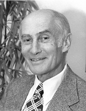

Please note: the AAS Obituaries are temporarily being hosted on this website while their full content is being ingested into the PubPub publishing platform newly adopted by the Bulletin of the American Astronomical Society. When the migration is complete, your existing links will take you to the final, migrated content. Contact peter.williams@aas.org with any questions.
John A. Russell (1913-2001)
John Albert Russell, pioneer meteor spectroscopist and founder of the Department of Astronomy at the University of Southern California (USC), died of old age on 2 November 2001. He was 88.
Russell was born in Ludington, Michigan on 23 March 1913. Five years later, he and his family settled in southern California. He entered the University of California, Los Angeles (UCLA) as a psychology major but after taking an inspiring elementary survey course in astronomy from Frederick C. Leonard, changed his major to astronomy the next semester, earning his BA in 1935. In 1937 Russell earned an MA and in 1943 a PhD in astronomy from the University of California, Berkeley (UCB). From 1941 to 1942 he was a Lick Observatory Fellow. He taught at Pasadena City College from 1939 to 1941, and served with the U.S. Air Force from 1942 to 1946. Russell served as Chairman of the Department of Astronomy from his arrival at USC in 1946 until 1969. From 1959 to 1968 he was also Chair, and then Associate Dean, of the Division of Natural Science and Mathematics. Russell retired in 1978.
When Russell came to USC, there was no support for research in astronomy: no equipment and no money. As Ernest Rutherford put it years ago, when you have no money, then you have to think. With a background in meteoritics from Leonard at UCLA, in spectroscopy and statistics from his thesis work with Robert J. Trumpler at UCB, and stimulated by Peter Millman’s chapter on meteor photography in Amateur Telescope Making-Advanced, Russell chose to observe and analyze meteor spectra. Thus began his nearly half a century of study of the Perseid meteor shower. One of Russell’s earliest spectra provided the first concrete evidence that the spectrum of a meteor depends primarily on the altitude and velocity of the meteoroid and not on its composition. Russell continued his research on meteor spectra, elucidating many fundamental properties not only of the Perseid stream itself but also of the physics and composition of the atmosphere through which those meteoroids traveled. He was an active member of The Meteoritical Society and served as its president from 1958 to 1962.
Russell devoted his efforts equally to research and to undergraduate teaching. Because other southern California universities already had well-developed graduate programs in astronomy, programs which sometimes tended to overshadow the broader and more fundamental astronomy appropriate for undergraduate study, he felt that USC could best make its contribution by providing a quality undergraduate program. Later, in justification of this policy, he was especially pleased and proud of the astronomical accomplishments of USC’s astronomical alumni. Russell was one of the very few USC faculty members ever to win both the USC Associates’ Award for Excellence in Research and the USC Associates’ Award for Teaching Excellence. Russell retired in 1978, but continued to be active in his research almost until he died. He received USC’s Distinguished Emeriti Award in 1983.
Of greatest significance is that Russell provided—to his students, colleagues, friends and associates—the finest example of a gentleman and a scholar. It was not merely his broad knowledge of astronomy and pedagogy that set him apart; it was his wisdom: his ability to distinguish right from wrong, in the broadest sense, whether in small day-to-day decisions, or in the determination of long-term policies of the university and scientific societies. Russell had a formal, tolerant, conciliatory nature, and at the same time was always available and helpful to his colleagues and students. He was rarely critical but when critical, was always constructively so. He was a very private person: not many were aware of his off-campus activities. For example, he and his wife exhibited dashing style and ability at Latin ballroom dancing; they were another Fred Astaire and Ginger Rogers.
The writer of this obituary met John Russell in 1946 and had worked with him at USC since 1952. He considers himself supremely fortunate, personally and professionally, to have had for so long such a fine colleague. John leaves a son Stanton James Russell, a daughter Carolyn R. Gold, and his wife Phyllis R. Russell.
Obituary written by: Gibson Reaves (University of Southern California)
BAAS Citation: BAAS, 2002, 34, 1374
SAO/NASA ADS Bibcode: 2002BAAS...34.1374R